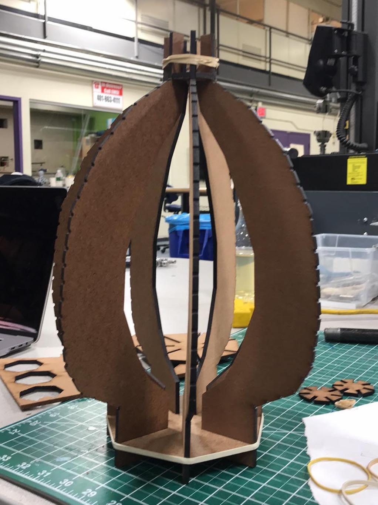
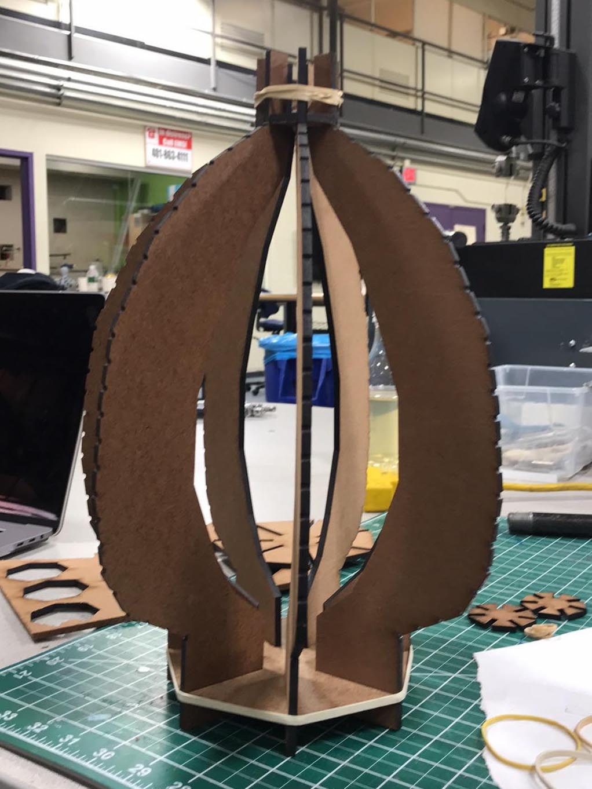

akari light sculpture model, 2019
17x10x10 in, kozo paper, 14 gauge galvanized utility wire, cable light, #2 round reed, black spray paint, thread, rubbber band, masonite (removed after construction)
 

I built a 1:1 model of Akari 1A, originally by Isamu Noguchi, an early model from the 1950s and a feature in the Akari 1955 Exhibition. My process included laser cutting Masonite forms for the formwork, setting natural reed for the ribs of the lantern, gluing damp kozo paper on the ribs, then assembling and painting the galvanized utility wire frame.
I became familiar with the lightness and fragility of the natural materials while working with them. Overall, my process for developing a hand for the craft and temporality in making an Akari light sculpture allowed me to discover a Japanese handcraft that begins to challenge the Western canonized modernist form of mid-century furniture design and interior architecture.